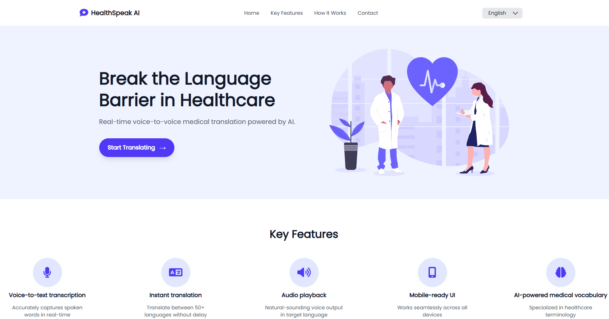
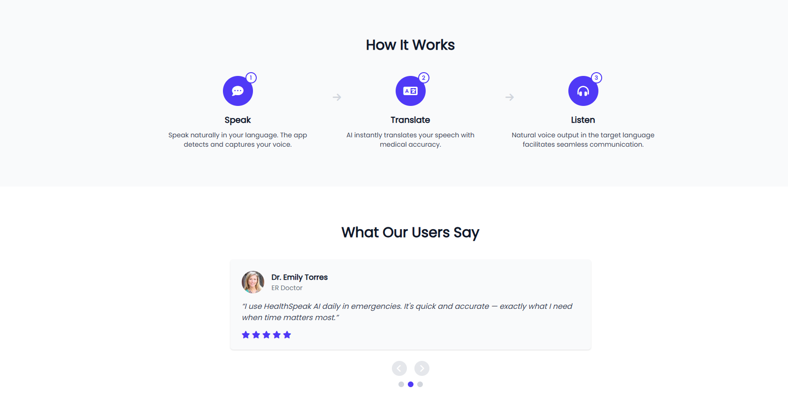
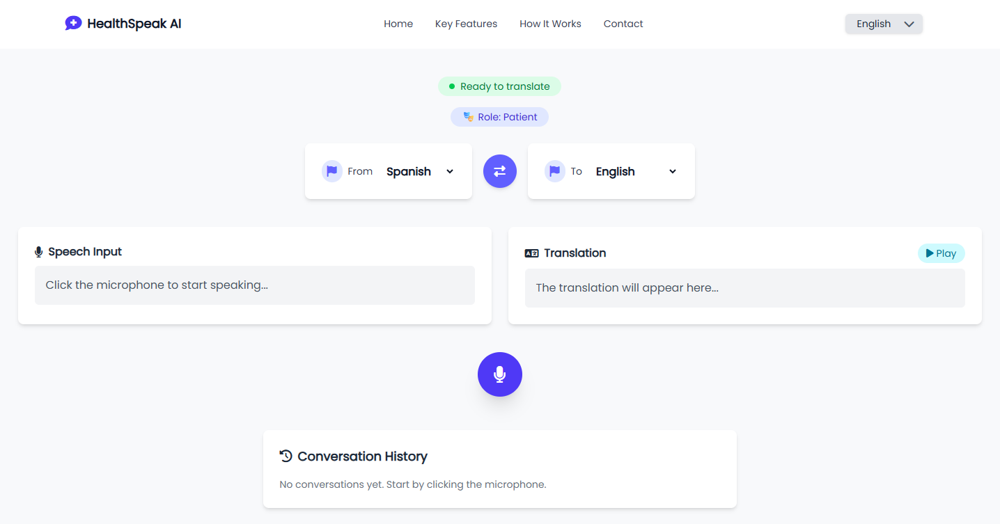
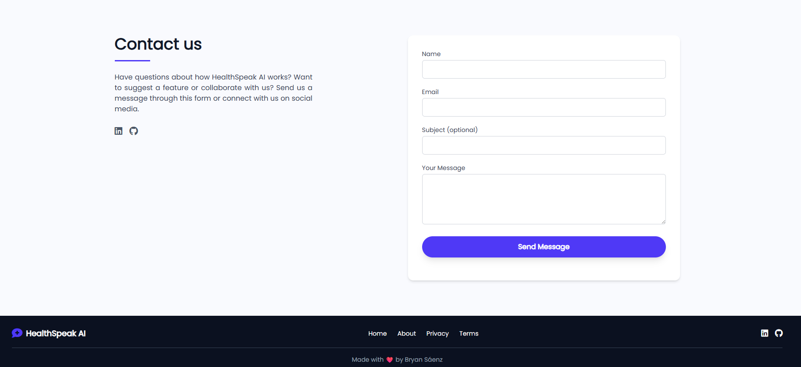

HealtSpeak AI




📝 Descripción
HealthSpeak AI es una aplicación web avanzada que emplea inteligencia artificial para traducir en tiempo real conversaciones médicas multilingües. Utiliza OpenAI Whisper para el reconocimiento de voz y OpenAI Translate para traducciones automáticas, facilitando la comunicación entre pacientes y doctores que hablan distintos idiomas.
⚙️ Funcionalidades Principales
- 🎤 Reconocimiento de voz en tiempo real con IA (Whisper API).
- 🌍 Traducción instantánea con OpenAI Translate.
- 🔊 Reproducción de audio con voz natural en el idioma destino.
- 🗁 Historial de conversaciones persistente con
localStorage. - 📅 Interfaz intuitiva con selector de idiomas y cambio de rol (doctor/paciente).
- 📅 Modal elegante para confirmación de borrado de historial.
- 🌐 Traducción de interfaz (i18n) soportando inglés y español.
- 📩 Formulario de contacto funcional con EmailJS.
🚀 Buenas Prácticas Aplicadas
- Arquitectura basada en Clean Architecture con separación de casos de uso, entidades y repositorios.
- Hooks personalizados para encapsular la lógica de traducción y reconocimiento.
- Internacionalización completa con react-i18next.
- UI responsiva y accesible con Tailwind CSS.
🛠️ Tecnologías Utilizadas
React
Vite
TypeScript
Tailwind CSS
OpenAI API
react-i18next
EmailJS
FontAwesome